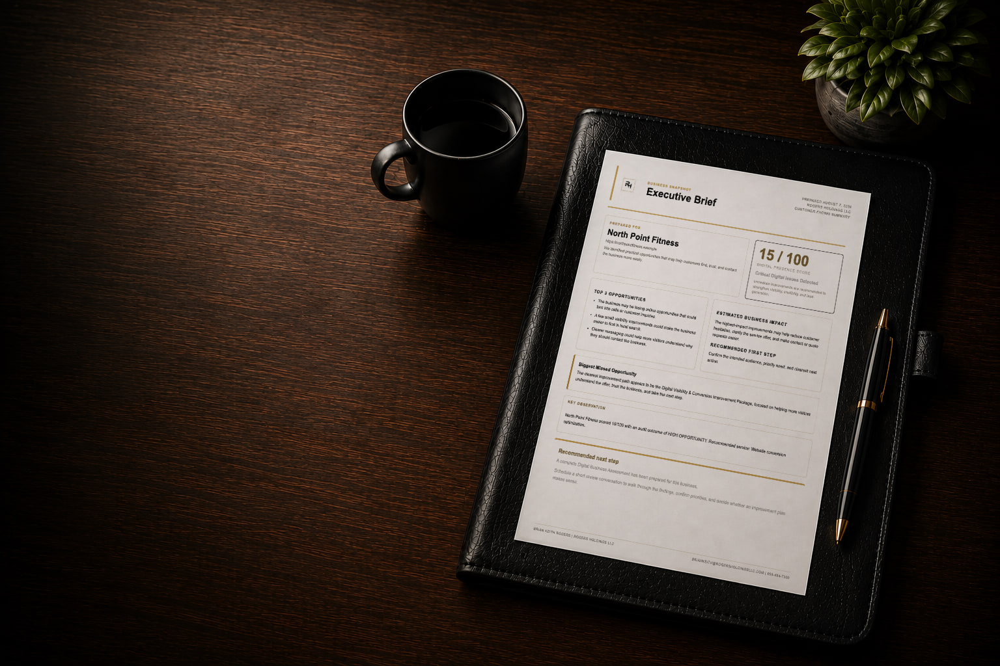
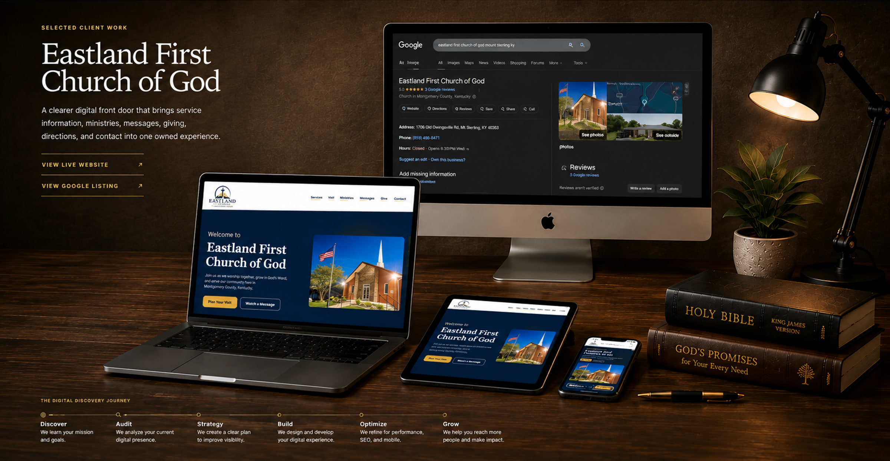

Are leads slipping through the cracks?
Some inquiries never get followed up with.

Business optimization for small and growing businesses
We help small businesses get more customers, save time, stay organized, and run better—with websites, automation, AI, Google Workspace, and practical business systems.
Free Business Snapshot · Human-reviewed · Executive Brief typically within three business days
Some inquiries never get followed up with.
Work is being repeated or done manually when it doesn’t need to be.
Important emails, files, spreadsheets, tasks, and information are hard to keep organized.
Your website, software, or processes aren’t working as well as they should.
Selected Client Work
A clearer digital front door that brings service information, ministries, messages, giving, directions, and contact into one owned experience.

The Digital Discovery Journey
Facebook was the primary online presence, with no dedicated website. Visitor information—including service times, ministries, messages, giving, directions, and contact—was fragmented and difficult to find, limiting search visibility and a centralized path forward.
We identified opportunities in mobile usability, visitor information, content structure, search foundations, and community engagement.
We delivered a modern mobile-first website with clearer navigation, organized ministries, visitor information, social integration, and a stronger search foundation.
Visitors now have a clearer mobile path to essential information, ministries, and contact.
How Rogers Holdings works
Find what’s getting in the way.
Decide what will make the biggest difference first.
Fix, build, automate, or organize what needs to work better.
What happens after your Business Snapshot
Share what isn’t working for a focused initial review.
Receive the clearest visible issue, what deserves attention first, a practical next step, and plain-English reasoning.
Discuss the Executive Brief and decide whether further work makes sense.
Take a deeper look at the relevant website, workflows, tools, and operating information.
Turn the findings into prioritized recommendations and an order for implementation.
Fix, build, automate, or organize the agreed priorities.
Review results and improve systems as the business changes.
How we can help
Improve your website, online visibility, customer path, and follow-up.
Build or improve a website that clearly explains your business and makes it easier for customers to take action.
Automate repetitive work and simplify routine tasks.
Organize files, email, forms, calendars, information, and workflows.
Use AI for practical work like research, writing, documentation, communication, and repeatable tasks.
Get an outside view of the operation when the source of the problem is unclear.
Business Optimization Platform
Our internal platform keeps evidence, findings, priorities, and implementation connected throughout the work.
We manage the system. You get clear recommendations and next steps—not another platform to learn.
Owner-led by design
When you work with Rogers Holdings, you work directly with the person responsible for understanding the problem, recommending the solution, and helping put it in place.
Use technology because it solves a problem—not because it’s new.
Every recommendation comes with plain-English reasoning.
The same owner who recommends the work remains accountable for helping deliver it.
Create systems that continue helping the business after the project ends.
A simple place to start
Request a Free Business Snapshot by describing what isn’t working. You’ll receive an Executive Brief identifying the clearest visible issue, what deserves attention first, a practical recommended next step, and the plain-English reasoning behind it.
Free Business Snapshot · Human-reviewed · Executive Brief typically within three business days · No sales call required
Prefer a direct conversation?
briankeith@rogersholdingsllc.com859-404-7300